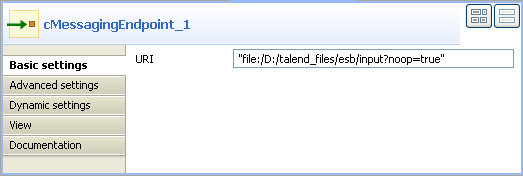
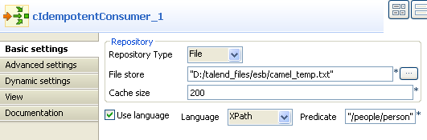
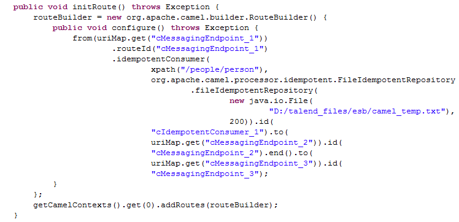

Component Family | Routing | ||||
Function | cIdempotentConsumer deduplicates messages and by that prevents the receiving message endpoint from receiving duplicate messages. | ||||
Purpose | cIdempotentConsumer identifies messages that have already been sent to the receiver and eliminates them. Messages are still sent by the sender but are ignored by the receiver at the delivery stage. | ||||
Basic settings | Repository Type | Message identifiers need to be stored in a repository. For new incoming messages, identifiers are checked against the ones stored in the repository to identify and drop duplicates. There are two ways to store them: Memory: messages identifiers are stored temporarily.
File: messages identifiers are stored in a file. Specify the path to this file in the File store field. | |||
| File store | Specify the path and name of the file storing messages identifiers. | |||
| Cache Size | Type in the size of the cache, i.e. the number of messages identifiers to store. | |||
| Use language | Select this check box if you want to specify the language used in the Predicate field to specify the identifier of the messages. | |||
| Expression | Type in the expression to use to specify the identifier of the messages. | |||
Usage | cIdempotentConsumer is used as a middle component in a Route. | ||||
Limitation | n/a | ||||
![[Warning]](../images/warning.png)
In this scenario, duplicated messages are filtered and only the unique ones are retrieved.
Here's an extract of the XML file used:
<people> <person id="8"> <firstName>Ellen</firstName> <lastName>Ripley</lastName> <city>Washington</city> </person> </people>
This use case requires one cIdempotentComsumer component and three cMessagingEndpoint components.

From the Palette, expand the Messaging folder and select the cMessagingEndpoint component. Drop one as the input component and two as the output components onto the design workspace.
Expand the Routing folder, select the cIdempotentComsumer component and drop it onto the design workspace, between the input and the output components.
Right-click the input cMessagingEndpoint component, select Row > Route from the contextual menu and click the cIdempotentComsumer component.
Right-click the cIdempotentComsumer component, select Row > idemp from the contextual menu and click the the output cMessagingEndpoint component on the top.
Use a Row > Route connection to connect the cIdempotentComsumer component to the other output cMessagingEndpoint component. This optional connection will retrieve all the messages from the source endpoint.
Double-click the input cMessagingEndpoint component to display its Component view, and type in the URI of the messages you want to route in the URI field.
Here, we are handling file messages, so type in "file:/" followed by the path to the folder containing the files to send, with the noop file specific option. This option tells Camel not to perform any operation on the files, as a result that files will stay as they are and will not be removed from their directory..
Double-click the cIdempotentComsumer component to display its Component view to set the required parameters.
In the Repository Type list, select between Memory and File to specify where the messages are stored before the deduplicate process. For this scenario, select File.
In the Cache size field, specify the maximum number of files to put in cache memory.
In the File store field, specify the location of the file storing message identifiers.
If you want to use a specific language to set your filter expression, select the Use language check box, select the language in the Language list, and type in the expression in the Predicate field that displays. Or you can simply type in the filter expression in the Expression field. Here, we used an XPath predicate to filter the messages according to the person node.
Double-click the first output cMessagingEndpoint component to display its Component view, and type in the URI in the URI field for the destination of your message.
Here, we are using a file message, so, type in "file:/" followed by the path to the folder in which the files will be routed. Then, unique messages will be redirected to this new unique folder and duplicated ones will be lost.

Double-click the second output cMessagingEndpoint component to display its Component view, and type in the URI in the URI field for the destination of all the messages.
Press Ctrl+S to save your Route.
Click the Code tab at the bottom of the design workspace to view the generated code.
 In the code, the node specified in cIdempotentConsumer is checked for duplicates by the idempotentConsumer Java class.
Click the Run view to display it and click the Run button to launch the execution of your Route. You can also press F6 to execute it.
RESULT: When several files have the same content, only the first one is routed to the receiving endpoint.